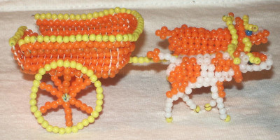

We are in week six of the Ignatian Lenten retreat, but I didn’t participate at all last week with everything at work, so now I’m playing catch-up. Work has been a mixture of putting projects on hold until we know how many people on our team will be laid off and preparing for our presentation yesterday at ShinyConf.
The presentation went well and now Eric wants to create an R package that simplifies making online dashboards accessible. This afternoon, we discussed what such a package would look like. I think it will be a mix of accessibility checks and functions to simplify adding accessible content. Functions would cover things like alt text, aria labels, and maybe a color suggester like my coworker’s Color Optimizer. I suggested we should have a function generate a report called the Accessibility Audit.
My prayer activity today is a reading from Luke 20:9-19. I don’t understand this parable, so I struggled a bit. I am watching from a distance. Perhaps I am in the next vineyard, or a relative of a tenant in this one. I don’t understand what the tenants are thinking by refusing to pay. Do they want to be thrown out? Then to attack the man’s slaves, who have less freedom than they? Are they bullies? I don’t have a clue what they expect to accomplish. What’s their cause? Why are they willing to risk being evicted? I don’t understand the landlord, either. Should he not have evicted them after the third strike? I feel sorry for his son, a naive young man who has never struggled a day in his life. I am not surprised they don’t heed him. I am surprised they kill him. To what end? Do they think they will be able to steal the land? The landlord’s status is higher than theirs and they’ve killed his son now; he has the might of the local law enforcement behind him. So he kills and replaces them. That’s predictable, at least.
According to my annotated bible, the vineyard is Israel and the landlord’s son is Jesus, but I don’t get it. Jesus wasn’t a naive heir; he was a threat to the Romans. And Israel as the vineyard I also don’t follow, unless Jesus was hoping the Romans would be wiped out, which is possible. I chose this reading today because I’ve been thinking about work and bullies and misuse of power.
At work we still have no idea who or how many people will be laid off in two weeks, which positions will be entirely eliminated, which teams might be entirely disbanded or absorbed into other teams, how layoffs were selected. People I’ve spoken to understand there’s no money and people need to be laid off, but the entire process has been chaotic and opaque, with no meaningful attempt to calm or reassure us. The empty platitudes we have received are worse than useless - they breed resentment.
Much as I don’t understand the tenants in this parable who ultimately and shortsightedly destroyed themselves, I don’t understand the entirely unnecessary and drawn-out trauma our leadership is inflicting on the Department of Health. It’s leading to distrust in leadership, burnout, fear, and fatigue among very talented, very hard-working staff, many of whom are veterans of COVID (myself included), who are now asking if maybe they should be looking for jobs elsewhere even if they did not get at-risk letters. The public health system here, and throughout the US, is suffering from insufficient capacity and cannot afford to lose any more good workers, so why is my department’s leadership trying to drive people away on top of the layoffs? I feel like one of the landlord’s slaves, unheard and unvalued.
The image below is of a Malawian oxcart pulled by two European oxen. I made the oxcart and a couple zebus to pull it while serving in the Peace Corps. Seven years later, I finally photographed it, but I’d managed to lose the zebus in the interim. Read more about this set on deviantArt. I chose this image because the slaves had no agency and no idea what they were walking into, much like the cattle here.
